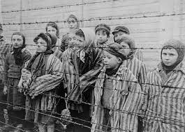

So what was the Holocaust?
The Holocaust was a genocide of Jews in Nazi-occupied Europe. It was a state-sponsored attack on all Jews where they would be killed in death camps. The Nazi party of Germany were who coordinated the genocide. In this event 6 million people were murdered - either in concentration camps, gas chambers or being shot.
Why did this happen?
THe Nazi party blamed the Jews for what happened in WW1 - more specifically what happened to Germany's economy. They were also seen as below the 'Aryan race' and were thought to spread diseases. This built up the Jewish negative stereotype - which also included Jews being communist supporters but also were avid capitalists.